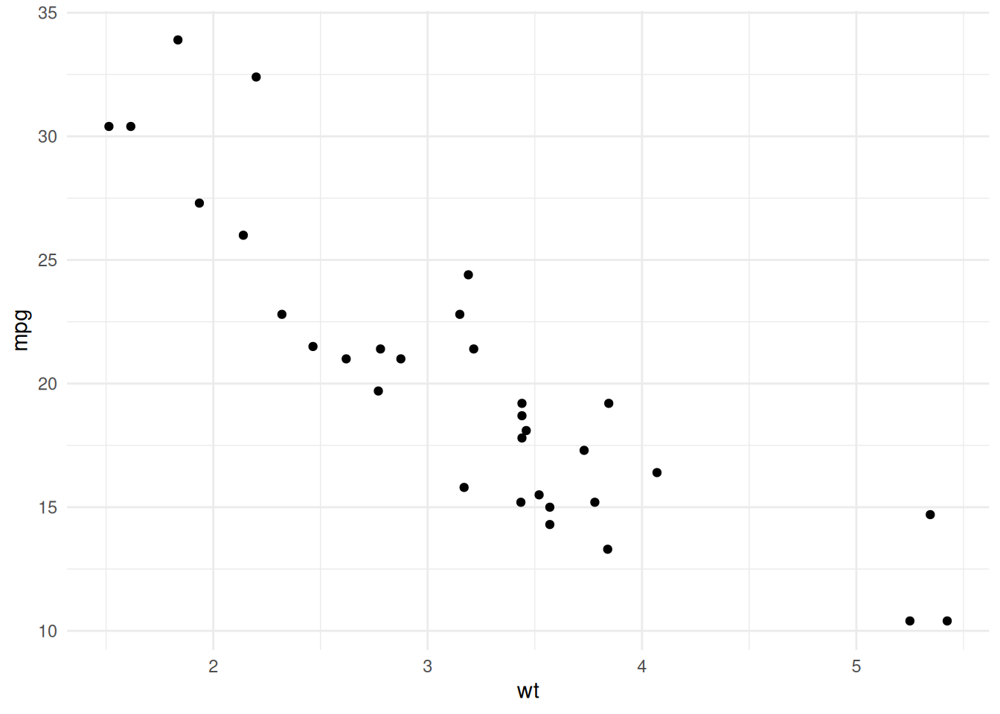

Web with Quarto
Web Pages and Blogs with Quarto
Building an online presence is an essential step for sharing your knowledge, showcasing your projects, or maintaining detailed documentation. Quarto makes it remarkably simple to create personal blogs and documentation sites that are interactive, visually appealing, and easy to maintain. In this post, we’ll guide you through:
- Setting up a personal blog or documentation site
- Embedding visualizations and interactive elements
By the end, you’ll have the tools to create dynamic, professional web pages with Quarto.
1. Setting Up a Personal Blog or Documentation Site
Quarto simplifies the process of creating static websites by combining markdown-based content creation with a flexible site generator.
Step 1: Install Quarto (if not already done)
Ensure Quarto is installed on your system. If you haven’t installed it yet, download and install Quarto.
Verify installation by running:
bash
Copy code
quarto checkStep 2: Create a New Quarto Website
Use the Quarto CLI to initialize a new website project:
bash
Copy code
quarto create-project my-site --type website
cd my-siteThis command creates a new folder my-site with the following structure:
perl
Copy code
my-site/
├── _quarto.yml # Site configuration
├── index.qmd # Homepage content
└── about.qmd # Example pageStep 3: Customize Your Site
Configuring the _quarto.yml File
The _quarto.yml file defines the structure and style of your website. Here’s an example configuration:
yaml
Copy code
project:
type: website
website:
title: "My Personal Blog"
navbar:
left:
- text: "Home"
href: index.qmd
- text: "About"
href: about.qmd
footer:
text: "© 2024 My Blog"
format:
html:
theme: flatlytitle: The title of your site.navbar: Defines the navigation bar with links to pages.footer: Adds a footer to your website.theme: Changes the visual style of the site. Quarto supports Bootstrap themes.
Adding Pages
Create additional pages by adding .qmd files to the project folder. For example, create projects.qmd for a Projects page.
Link the new page in the navigation bar by updating _quarto.yml:
yaml
Copy code
- text: "Projects"
href: projects.qmdStep 4: Preview and Deploy Your Site
Preview Locally
Run the following command to preview your site:
bash
Copy code
quarto previewThe site will be available at http://localhost:4200.
Deploy Online
Deploy your site to platforms like GitHub Pages, Netlify, or Vercel. For GitHub Pages:
- Push your project to a GitHub repository.
- Configure the repository to serve the site from the
gh-pagesbranch:
bash
Copy code
quarto publish gh-pages2. Embedding Visualizations and Interactive Elements
One of Quarto’s strengths is its ability to seamlessly embed rich, interactive content, such as charts, maps, and dashboards.
Embedding Visualizations
Static Visualizations
You can embed plots generated in R, Python, or Julia directly in your .qmd files. For example:
::: {.cell}
```{.r .cell-code}
library(ggplot2)
ggplot(mtcars, aes(x = wt, y = mpg)) +
geom_point() +
theme_minimal()
:::
When rendered, this code will generate a plot embedded in the webpage.
### Interactive Visualizations with `plotly`
You can make plots interactive using libraries like `plotly`:
```markdown
::: {.cell}
```{.r .cell-code}
library(plotly)
Attaching package: 'plotly'The following object is masked from 'package:ggplot2':
last_plotThe following object is masked from 'package:stats':
filterThe following object is masked from 'package:graphics':
layoutplot_ly(data = mtcars, x = ~wt, y = ~mpg, type = 'scatter', mode = 'markers'):::
When rendered, this code will generate a plot embedded in the webpage.
### **Interactive Visualizations with `plotly`**
You can make plots interactive using libraries like `plotly`:
```markdown
::: {.cell}
```{.r .cell-code}
library(plotly)
plot_ly(data = mtcars, x = ~wt, y = ~mpg, type = 'scatter', mode = 'markers'):::
This adds hover effects and other interactive features to your plot.
### **Embedding Interactive Elements**
### **HTML Widgets**
Quarto supports embedding HTML widgets such as `leaflet` for interactive maps:
```markdown
::: {.cell}
```{.r .cell-code}
library(leaflet)
leaflet() %>%
addTiles() %>%
addMarkers(lng = -122.431297, lat = 37.773972, popup = "San Francisco"):::
### **Interactive Tables**
Add dynamic tables using packages like `DT`:
```markdown
::: {.cell}
```{.r .cell-code}
library(DT)
datatable(mtcars):::
This creates sortable, searchable tables directly in your page.
### **Code Widgets**
For hands-on coding interactivity, embed Observable JavaScript or Shiny apps in your website:
```markdown
::: {.cell}
```{.observable .cell-code}
viewof mySlider = Inputs.range([0, 100], {value: 50, step: 5})::: ```
Best Practices for Web Pages and Blogs
- Organize Content: Use meaningful file names and folder structures for better navigation.
- Minimize Page Load Time: Avoid embedding large datasets or complex visualizations without optimization.
- Responsive Design: Use themes and layouts that adapt well to mobile and desktop devices.
- Track Usage: Integrate Google Analytics or similar tools to monitor site traffic.
Conclusion
Quarto’s seamless integration of content, code, and visualizations makes it an excellent tool for creating dynamic blogs and documentation sites. With support for interactive visualizations, automated deployments, and flexible styling options, Quarto empowers you to showcase your data and insights effectively.